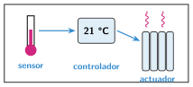
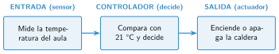

Qué es un sistema de control
🤔 Pienso5 min
Qué hago aquí: Piensa un momento y contesta con lo que ya sabes. No pasa nada si no lo sabes: es para empezar.
Una farola se enciende sola de noche. Un termostato apaga la calefacción. Un robot aspirador gira al chocar. ¿Qué tienen en común?
✏️ Puedes responder escribiendo, con un dibujo o un esquema, o contándolo en voz alta.
📖 Leo y aprendo15 min
Qué hago aquí: Lee despacio, mira los dibujos y los ejemplos, y quédate con la idea clave del final.
En la unidad 1 viste que un sistema de control tiene tres partes. Mira el termostato del aula .

Ahora lo dibujamos con cajas:

Este dibujo es un diagrama de bloques: una caja para cada parte y flechas entre ellas.
✏️ Hago25 min
Qué hago aquí: Haz las actividades en orden. Empieza siempre por las básicas.
Completa: la recoge información, el decide y la hace la acción.
Dibuja el esquema de un robot aspirador que gira al chocar. Escribe algo en cada caja.
✏️ Puedes responder escribiendo, con un dibujo o un esquema, o contándolo en voz alta.
Escribe la consigna de cada sistema.
| Sistema | Consigna (qué quiere conseguir) |
|---|---|
| Nevera | |
| Riego automático | |
| Farola |
Vuelve a Pienso. Responde ahora con las palabras entrada, controlador y salida.
Un ventilador con tres botones de velocidad, ¿es un sistema de control automático? ¿Qué le añadirías para que lo fuera?
🚀 Amplío (si quieres saber más)
Qué hago aquí: ¿Has terminado? Lee la curiosidad o elige el reto. Es voluntario.
Lee el «Para pensar» de la apertura. Dibuja el esquema del sistema que mantiene la temperatura de tu cuerpo.
✅ Compruebo5 min
Qué hago aquí: Contesta sin mirar la ficha y marca cómo lo llevas.